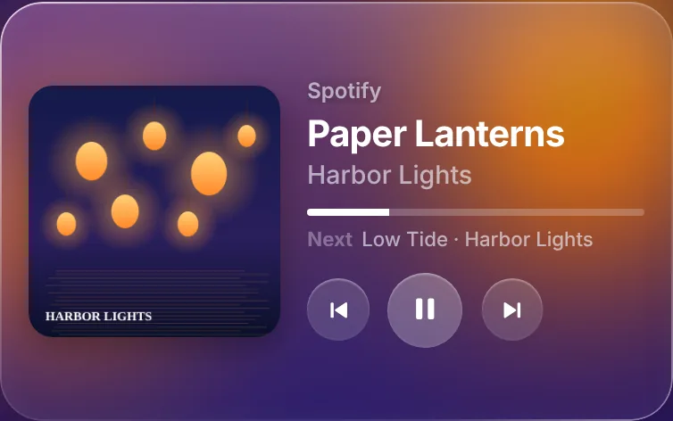

Your desk, on an old phone.
PhoneDesk turns a spare Android phone into a display for your Windows PC: what is playing, synced lyrics, your calendar, PC stats and the battery of every Bluetooth device, laid out the way you want.
Free and open source · Windows 10 and 11 · Android 7 or newer


Widgets
Sixteen widgets. Put them anywhere.
Every widget scales to the space you give it, and every one comes in two styles: Classic, and Liquid Glass over a blur of the album you are playing.

PC stats
CPU, memory, GPU with its heat, network, disks and the busiest apps.

Weather
Now, or five days ahead.

Bluetooth devices New
Every device connected to the PC, with its battery when it reports one.

World clock New
The time in up to four places.

Agenda
Google, Outlook or iCloud.

Notes New
Write them on the PC, tick them off on the phone.

Now playing
With the song that plays next.
Also: clock, 5-day forecast, lyrics, volume, shortcut buttons, timer, photo frame, recently played, text, and widgets from addons.
Layouts
Lay out pages on the PC, or right on the phone.


- A 12 by 6 grid. Drag to move, pull a corner to resize, undo and redo.
- Hold a widget on the phone to move it there, then tap Done.
- Tap and hold actions per widget: play, open a screen, run a shortcut.
- Corners, background and accent for each page.
Music
Lyrics that keep time with the song.
Spicy Lyrics lights each word as it is sung. When only LRCLIB has the song, the whole line lights on its cue instead of guessing at words.
- Spotify, or any player that shows in the Windows media controls.
- Up next from your Spotify queue.
- Double-tap to play or pause, if you turn it on.
- Four lyrics styles, and Hebrew lyrics read right to left.

Screens
Built-in screens, in the same style.
Swipe between them and your own pages, switch them on a schedule, and let night mode dim the phone with the room.


Setup
Running in three steps.
Install it on the PC
No admin rights and nothing else to install. It sits in the tray, starts with Windows and updates itself.
Open it on the phone
Scan the QR code, or install the small phone app: it finds the PC by itself over Wi-Fi or USB.
Pick a template
Start from Desk, Music or Clock, then change any page from the PC or the phone.
Addons
Add your own screens and widgets.
Addons bring new screens, widgets and shortcut actions: a Home Assistant panel, a focus timer, anything you can build with the SDK. Every permission is shown before an addon installs. Browse the addons or build one.

Questions before you install.
What you need
A Windows 10 or 11 PC and a phone on Android 7 or newer, on the same Wi-Fi or plugged in by USB.
Security warning on install
The setup isn’t code-signed yet, so Windows asks first: More info, then Run anyway. GitHub Actions builds every release.
Privacy
Keys, tokens and your calendar address never leave the PC. Lyric and weather lookups send only the song or the city.
Old phones
The glass look uses a pre-blurred wallpaper, not live blur, so it stays smooth on old hardware.

Give the old phone a job.
PhoneDesk {{VERSION}} is free and open source. Windows 10 and 11, Android 7 or newer.
Download for Windows